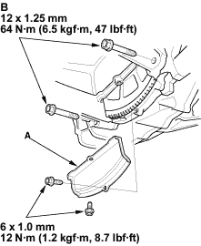

- Install the clutch cover (A), and tighten the two bolts (B) securing the transmission.

- If the engine is still in the vehicle, install the sub-frame.
- Install the sub-frame. Align the reference lines on the sub-frame with the bolt head centre, then tighten the bolts (see step 4 on page 5-11).
- Tighten the front mounting bolt (see step 5 on page 5-11).
- Tighten the rear mount mounting bolts (see step 6 on page 5-12).
- Connect the suspension lower arm ball joints (see step 10 on page 18-5).
- After assembly, wait at least 30 minutes before filling the engine with oil.